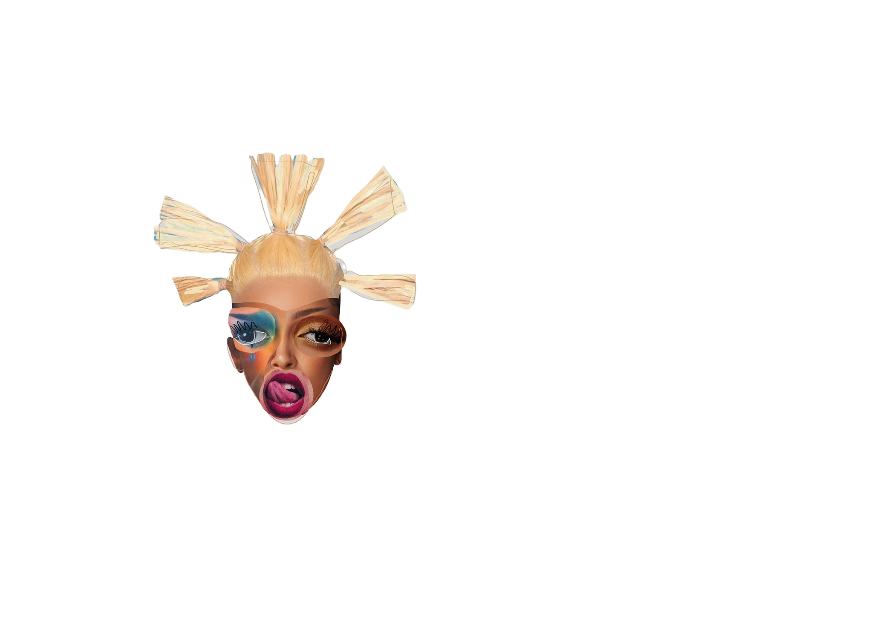
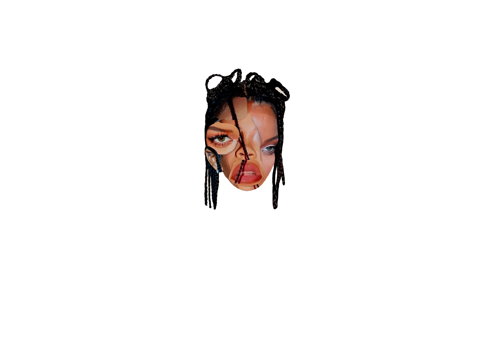
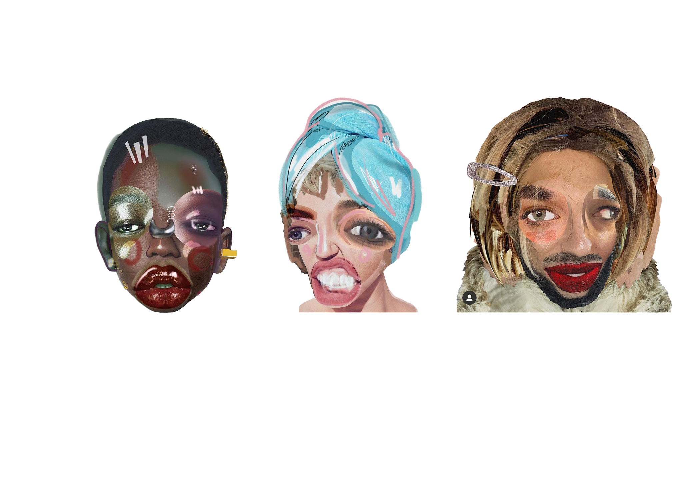

We see so many faces throughout our lives
and to think all of these people have life as dense as our own is overwhelming.
Maybe if we could see beyond other human`s physical exterior, and spend some time with their thoughts we could better understand each other.


